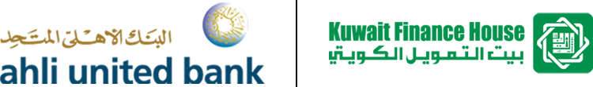
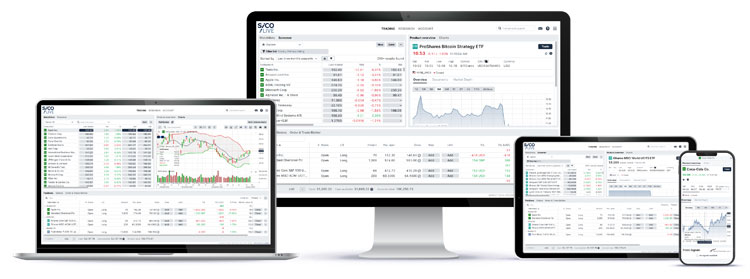

News Highlights

SICO completes advisory on Kuwait Finance House’s 100% acquisition of Ahli United Bank
SICO acted as Bahrain receiving agent, Bahrain execution advisor, and cross-listing advisor on the landmark USD 10.9 billion acquisition of up to 100% of Ahli United Bank B.S.C. (AUB) by Kuwait Finance House K.S.C.P. (KFH), which was structured by way of a voluntary conditional offer by KFH to AUB shareholders to acquire up to 100% of AUB’s issued and paid-up ordinary shares.
This transaction marks the first time a Kuwait-listed institution cross lists in Bahrain and is the third largest banking acquisition in the GCC, with AUB’s market capitalization prior to its suspension closing at USD 10.9 billion. The consolidation is expected to create the region’s sixth largest bank.

SICO launches SICO LIVE Global and introduces online onboarding services
SICO expanded the reach of its online platform SICO LIVE with the launch of SICO LIVE Global. The new platform allows users access to direct equities from 17 different markets and over 25 exchanges, along with a number of other markets via US or European-listed ETFs. Users can trade globally listed bonds across developed and emerging markets, with access to liquid alternatives such as listed index funds and ETFs that range in geographies, themes, and strategies. SICO also launched a simplified online onboarding process for its regional online trading platform, SICO LIVE, during the second half of the year.
SICO acquires remaining stake in SICO Capital, making it a fully owned subsidiary
SICO acquired the remaining 27.29% stake held by Bank Muscat in SICO Capital, a Saudi based full-fledged capital markets services provider. SICO had signed an agreement with Bank Muscat to acquire the remaining stake in October and the successful transaction closure was completed after obtaining all the required regulatory approvals. The acquisition value for the remaining stake in SICO Capital is BD 1.9 million, based on its net book value as of 31 March 2022.

SICO’s Top-20 Portfolio announces generation of cumulative returns of 152% at its five-year mark
SICO’s equally weighted diversified GCC Equities portfolio, SICO Top-20, has generated a cumulative return of 152% since its launch in November 2017. SICO Top-20 has consistently outperformed its benchmark, the S&P GCC Index, which on a comparative basis delivered cumulative returns of 85% over the past five years. A product of SICO’s sell-side Research division, Top-20’s portfolio encompasses a diversified range of stocks across GCC, which have been managed by the Research team, backed by fundamental research and timely calls.

SICO Capital establishes new securities services business line
SICO Capital launched comprehensive securities services business line, offering a full range of custody and fund services, further diversifying the firm’s robust spectrum of capital market activities. The new offerings are tailor-made to meet the evolving needs of a diverse local and global client base of both emerging and established players, capitalizing on the flourishing asset management business in Saudi Arabia. The services, in addition to pre- and post-trade execution solutions, will include more value-added services for asset managers, such as middle office and performance analytics for public and private funds covering all asset classes – both liquid and illiquid. The investor services offered will include unit holder dealing, investment manager factsheets, along with bespoke front to back-office reporting.